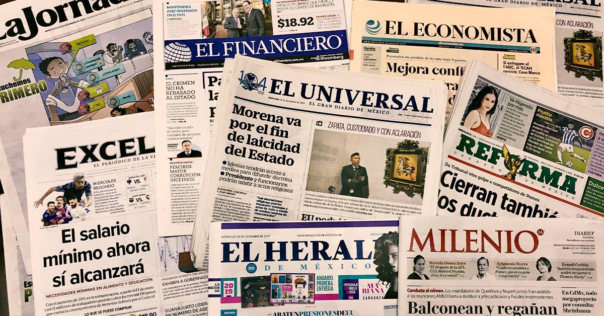
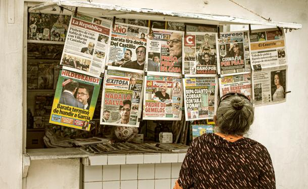

|
 |
 |
La prensa es una forma de comunicación masiva que transmite información de interés público, como noticias, reportajes, entrevistas y artículos de opinión, a través de medios escritos o digitales
Informativa
Su función principal es informar sobre hechos actuales, relevantes y verificados.
Periodística
Utiliza técnicas del periodismo como la investigación, la entrevista, y el reportaje.
Periodicidad
Se publica con frecuencia regular: diaria, semanal, quincenal o mensual.
Objetividad (ideal)
Intenta presentar los hechos con imparcialidad, aunque esto depende del medio y del periodista.
Estructura definida
Está organizada en secciones: política, economía, deportes, cultura, etc.
Lenguaje claro y conciso
Se busca que el mensaje sea comprensible para un público amplio.
Diversidad de géneros
Incluye géneros informativos (noticia, crónica, reportaje) y de opinión (editorial, columna, carta al director).
Función social
Sirve como vigilante del poder (cuarta poder), fomenta la opinión pública y la democracia.
Adaptación al medio digital
Hoy muchas publicaciones son digitales, con contenido multimedia (videos, enlaces, redes sociales, etc.)